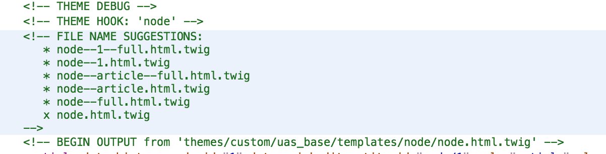
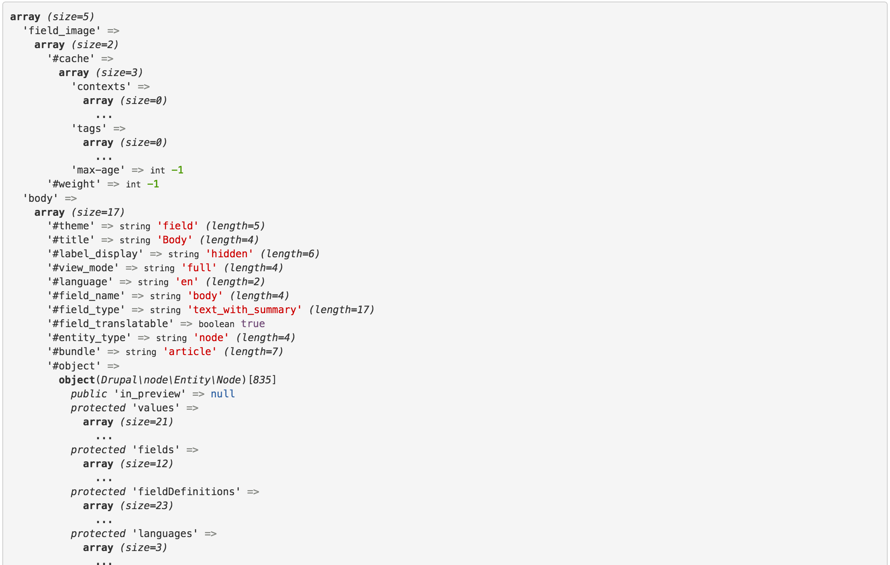
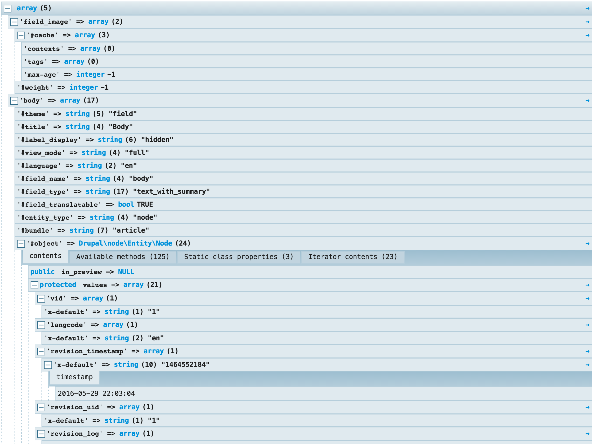
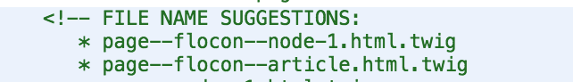

Fabrice Scoyer
Freelance Drupal - Flocon de toile
parameters:
twig.config:
debug: true
auto_reload: true
cache: false

Une extension chrome : Drupal template Helper
Un peu brut...peut mieux faire
Mieux mais très looooooonnnnnng

Découvertes automatiquement dans le dossier templates du thème
Copier le template ou sa variation dans son thème
hook_theme_suggestions_HOOK_alter()
function MODULE_theme_suggestions_page_alter(array &$suggestions, array $variables) {
if ($node = \Drupal::routeMatch()->getParameter('node')) {
$suggestions[] = 'page__flocon__' . $node->getType();
$suggestions[] = 'page__flocon__node_' . $node->id();
}
}

/**
* Implements hook_theme().
*/
function MODULE_theme($existing, $type, $theme, $path) {
return [
'social_simple_buttons' => [
'variables' => array(
'var1' => [],
'var2' => [],
]
];
}
{# file social-simple-buttons.html.twig #}
{% if var1 or var2 -%}
<div class"social-buttons">{{ var1 }} {{ var2 }</div>
{%- endif %}
$build['brocoli'] = [
'#theme' => 'social_simple_buttons',
'#var1' => $var1,
'#var2' => $var2,
];
exemple avec links.html.twig (voir drupal_common_theme())
/**
* Implements hook_theme().
*/
function MODULE_theme($existing, $type, $theme, $path) {
return [
'social_simple_buttons' => [
'variables' => array('links' => array(), 'attributes' => array('class' => array('links')), 'heading' => array(), 'set_active_class' => FALSE),
'preprocess functions' => array('template_preprocess_links'),
],
];
}
{# file social-simple-buttons.html.twig #}
avec la surcharge automatique
/**
* Implements hook_theme().
*/
function MODULE_theme($existing, $type, $theme, $path) {
return [
'links__social_simple_buttons' => [
'base hook' => 'links',
],
];
}
{# file links--social-simple-buttons.html.twig #}
{# dans le dossier templates du module ou du thème #}
ou directement en construisant le render array
$build['social_simple_buttons'] = [
'#theme' => 'links__social_simple_buttons',
'#links' => $links,
'#attributes' => array(
'class' => array('links', 'inline', 'social-buttons-links')
),
'#heading' => array(
'text' => t('Share on '),
'level' => 'div',
'attributes' => array(
'class' => array('social-buttons-title'),
),
),
];
{# file links--social-simple-buttons.html.twig #}
{# dans le dossier templates du thème uniquement #}
{# Twig sans Drupal 8 : utilisation du filtre e #}
{{ title|e }}
{# Twig avec Drupal 8 : le filtre escape est appliqué automatiquement #}
{{ title }}
Twig autoescape enabled and text sanitization APIs updated
return ['#plain_text' => $var_safe_or_unsafe ]
return new TranslatableMarkup($string, $args, $options);
Twig est sécurisé
Ce n'est donc pas une vérité absolue.
Avec un peu de bonne volonté on peut très bien en faire un portail d'entrée pour les injections SQL, XSS ou autres joyeusetés
Le template de base très très long
{# @file page.html.twig #}
{% block main %}
<div role="main" class="main-container {{ container }} js-quickedit-main-content">
....
{# Sidebar Second #}
{% if page.sidebar_second %}
{% block sidebar_second %}
<aside class="col-xs-12 col-sm-4 col-md-3 sidebar sidebar-secondary"">
{{ page.sidebar_second }}
</aside>
{% endblock %}
{% endif %}
...
</div>
{% endblock %}
La variation qui ne surcharge que le strict nécessaire
{# File page--contact.html.twig #}
{% extends "page.html.twig" %}
{% block section %}
{% set content_classes = [page.sidebar_first or page.sidebar_second ? 'col-xs-12 col-sm-7 col-md-7',] %}
<section{{ content_attributes.addClass(content_classes) }}>
{% endblock %}
{# Sidebar Second #}
{% block sidebar_second %}
<aside class="col-xs-12 col-sm-5 col-md-5 sidebar sidebar-secondary" role="complementary">
{{ page.sidebar_second }}
</aside>
{% endblock %}
Pas de duplication de code,
et on visualise immédiatement la nature de cette variation
{# @file page.html.twig #}
{% include 'header.html' %}
{% block main %}
<div role="main" class="main-container {{ container }} js-quickedit-main-content">
...
</div>
{% endblock %}
{% include 'footer.html' %}
Décomposer des templates conséquents en plus petits éléments
Améliorer la lisibilité et la maintenabilité
t : traduire une chaine de caractère dans la langue courante
{{ 'Home'|t }}{% trans %} ... {% endtrans %} : pour une chaine avec arguments
{% trans %}By {{ author_name }}{% endtrans %}safe_join : pour concaténer un tableau en liste avec séparateur
{{ items|safe_join(', ') }}without : pour enlever un (ou plus) élément d'un tableau
{{ content|without('field_tags', 'links') }}clean_class : formater une chaine en une classe HTML valide
{% set classe = view_mode ? 'node--view-mode-' ~ view_mode|clean_class %}clean_id : formater une chaine en identifiant HTML valide
<div id="{{ custom_var|clean_id }}">format_date : formater une date
{{ node.createdtime | format_date('publication_date') }}url : génère une url absolue depuis une route
{{ url('view.news.page_news') }}path : génère une url relative depuis une route et un argument
{{ path('entity.node.canonical', {'node': node.id}) }}link : génère un lien
{{ link(item.title, item.url, { 'class':['btn', 'btn-primary'] }) }}file_url : génère une url vers un fichier
{{ file_url(node.field_image.entity.uri.value) }}attach_library : attache une librairie au rendu
{{ attach_library('module/flexslider') }}drupal_view : embarquer une vue
{{ drupal_view('view_name', 'display_name') }}drupal_block : embarquer un bloc
{{ drupal_block('news_featured') }}drupal_entity : embarquer une entité
{{ drupal_entity('node', '3', 'teaser') }}drupal_token : utiliser les tokens pour récupérer des valeurs
{{ drupal_token('site:name') }}drupal_config : accéder à la configuration
{{ drupal_config('system.site', 'name') }}
function MODULE_preprocess_node(&$variables) {
$attributes = new Attribute(['class' => 'btn']);
$attributes->addClass('btn-default');
$variables['var_attributes'] = $attributes;
}
<article{{ var_attributes.addClass(classes) }}>{{ var_attributes.removeClass('btn-default') }}{{ var_attributes.setAttribute('id', 'my-id') }}{{ var_attributes.removeAttribute('id') }}{% if var_attributes.hasClass('btn-default') %}<div class"my-class {{ var_attributes.class }}" {{ attributes|without('class') }}>depuis les fonctions de preprocess
function MODULE_preprocess_node(&$variables) {
$node = $variables['node'];
$variables['var1'] = $node->label();
$variables['var2'] = $var2;
$variables['var_attributes'] = new Attribute();
}
{# @file node.html.twig #}
<div {{var_attributes.addClass('my-class') }}> {{ var1 }} - {{ var2 }}</div>
depuis les fonctions de preprocess
function MODULE_preprocess_paragraph__paragraph_slide(&$variables) {
$variables['link'] = [];
$variables['url'] = '';
$paragraph = $variables['elements']['#paragraph'];
$uri = $paragraph->field_paragraph_slide_link->uri;
$title = $paragraph->field_paragraph_slide_link->title;
$options = $paragraph->field_paragraph_slide_link->options;
$options['attributes']['class'][] = 'btn';
$options['attributes']['class'][] = 'btn-primary';
if ($title && $uri) {
$url = Url::fromUri($uri, $options);
$variables['link'] = Link::fromTextAndUrl($title, $url);
}
if ($uri) {
$variables['url'] = Url::fromUri($uri, $options)->toString();
}
$position = new Attribute();
$class = Html::cleanCssIdentifier($paragraph->field_paragraph_slide_position->value);
if (empty($class)) {
$class = 'center';
}
$position->addClass($class);
$variables['position'] = $position;
}
depuis le template
{% set link_url = content.field_paragraph_slide_link.0['#url'] %}
{% set link_title = content.field_paragraph_slide_link.0['#title'] %}
{# ou une alternative en passant par l'objet et non le render array)
{% set link_url = paragraph.field_paragraph_slide_link.0.url %}
{% set link_title = paragraph.field_paragraph_slide_link.0.title %}
{% if link_url and link_title %}
<div class="slide-link">
<a href="{{ link_url }}" class="btn btn-primary">{{ link_title }}</a>
{# une autre alternative #}
{{ link(link_title, link_url, { 'class':['btn', 'btn-primary']} ) }}
</div>
{% endif %}
Pour des ajouts relatifs au theming
La simplicité est la sophistication suprême
Création d'un service
# file monmodule.services.yml
services:
monmodule.twig_extension:
class: Drupal\monmodule\TwigExtension
arguments: ['@entity_type.manager', '@token', '@config.factory', '@current_route_match']
tags:
- { name: twig.extension }
Implémentation de Twig_Extension
/**
* Twig extension with some useful functions and filters.
*/
class TwigExtension extends \Twig_Extension {
public function getFunctions() {
return [new \Twig_SimpleFunction('my_func', [$this, 'myFunc'])];
}
public function getFilters() {
return [new \Twig_SimpleFilter('uc_words', [$this, 'ucWords'])];
}
public function myFunc($arg1, $arg2, $arg3) {
return some_complex_stuf(...);
}
public function ucWords($text) {
return ucwords($text);
}
}
Twig extender permet de créer ses extensions Twig depuis le système de plugin de Drupal 8
/**
* Example plugin Hello World.
*
* @TwigPlugin(
* id = "twig_extender_hello",
* label = @Translation("Hello world plugin"),
* type = "function",
* name = "hello",
* function = "hello"
* )
*/